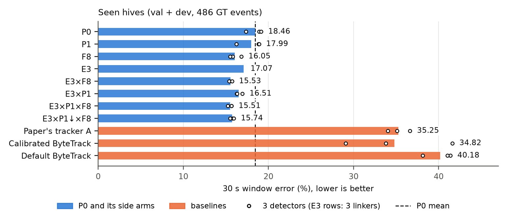
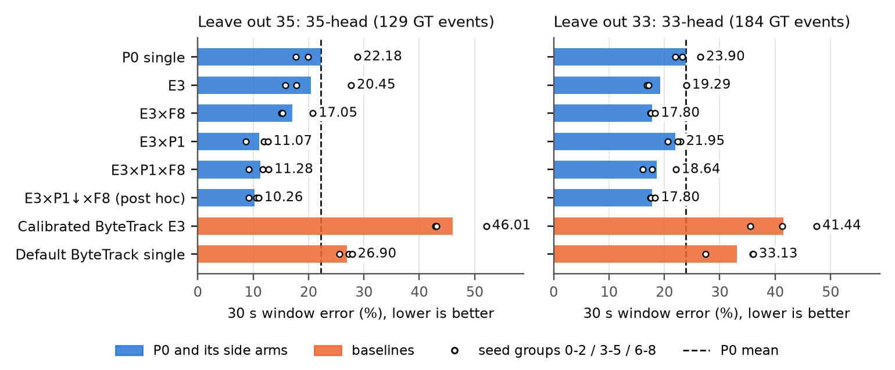

| Member | Student ID | Main responsibility |
|---|---|---|
| {{NAME1}} | {{ID1}} | Data and evaluation |
| {{NAME2}} | {{ID2}} | Detection, Experiment 2 |
| {{NAME3}} | {{ID3}} | Tracking, improvement, Experiment 1 |
| {{NAME4}} | {{ID4}} | Counting, visualization, demo, report |
Entrance traffic, the number of bees leaving and returning to a hive, is a direct sign of colony activity, but counting it by eye does not scale. BeeTrack finds every honeybee in a hive-entrance video, follows it over time and counts how many bees enter and leave. A YOLO11-s detector, fine-tuned on the BEE24 dataset, finds the bees. A strict first-stage tracker joins only boxes that overlap almost perfectly, so each short tracklet is very likely one bee. TrackletLink, a small network that looks only at geometry, then decides offline which tracklet continues which. A track that starts outside the entrance zone and ends inside is one entry, and the reverse is one exit. We judge the system mainly by the 30-second window counting error: every 30 seconds we compare the predicted in and out counts with the true ones, add up the differences and divide by the true number of events. On the hives the detectors saw in training (val + dev, 486 events), the main pipeline P0 has a window error of 18.46% (mean of three detectors), against 34.82% for ByteTrack with calibrated counts and 40.18% for default ByteTrack. On hives the detector never saw, the result is weaker. In a leave-one-hive-out test P0 has 22.18% and 23.90% on the two held-out hives, and 33.97% and 36.60% on two held-out scenes with short clips. Averaging the window counts of several detectors, input scales or flipped copies of the video lowered the error on some folds, but no rule written down in advance beat P0 clearly on both folds. One rule passed both folds only after we designed it from those results, and then it was confirmed on only two of four fresh checks. So P0 stays the main system and the averaging arms are side results. On the five official test videos (405 events, one locked run) P0 has a window error of [test], against [test] for calibrated ByteTrack.
Keywords: multi-object tracking, tracklet linking, honeybee monitoring, YOLO11, ByteTrack, entrance counting, domain shift, leave-one-hive-out
Beekeepers and pollination researchers watch hive entrances because foraging traffic reacts quickly to weather, food, pesticides and disease. A video camera at the entrance is cheap, but turning the video into numbers is not. A few minutes of footage contain thousands of short flights, and manual counting is slow and error-prone. A system that tracks each bee and counts how many enter and leave would make continuous, objective monitoring possible.
Bees are harder to track than pedestrians, the setting most multi-object trackers were built for. A bee box is only about 46 × 50 pixels in a 950 × 600 frame. Dozens of bees look practically the same, so appearance helps little. Bees speed up, turn and land within a few frames. The entrance is also the most crowded part of the image, and it is exactly where counting happens. One broken track at the entrance turns one entry into two half-tracks that count nothing; one wrong join can turn a bee that only flew past into an entry.
There is a second difficulty that we underestimated at the start: the hive at test time is new. The detectors are trained on four hives. In our notes we treat the five test videos as hives that no detector saw. A system that counts well on the training hives can still count badly on a new one, and a large part of this project went into measuring that.
The first report proposed motion-adaptive association, a set of changes inside ByteTrack, and counted entrance crossings on the test set out of 341 events. Four things have changed since then, and all numbers of the first report are replaced, not mixed in.
The system addresses Project 1 of the course. Its input is a hive-entrance video (a video file or a folder of frames). Its outputs are, for every frame, the box and track ID of every bee; a trajectory per ID; in/out counts at the entrance, in total and per 30-second window; an annotated video; and a CSV file of all tracks. The objectives follow the course requirements: a fine-tuned deep detector for bees (R1); a tracker that keeps identities through missed detections, fast flight and short occlusions, plus counting (R2); a justified improvement measured against ByteTrack on the same detections (R3); at least two controlled experiments with one factor changed at a time (R4); robustness under at least three conditions (R5); and a demo application that processes a video end to end (R6).
Object detection. Single-stage detectors of the YOLO family [1] predict boxes in one forward pass and are the usual choice for real-time tracking by detection. We use YOLO11 [2], in its small variant. Transformer detectors such as RT-DETR [3] reach similar speed but need more memory and training time than our 8 GB laptop GPU allows.
Tracking by detection. SORT [4] links detections with a constant-velocity Kalman filter [5] and IoU-based Hungarian matching [6]. DeepSORT [7] adds a re-identification embedding, which helps little when all targets look alike. ByteTrack [8] also matches low-confidence detections in a second stage. It is the default tracker in Ultralytics and our baseline. BoT-SORT [9] adds camera-motion compensation and appearance; the BEE24 camera is static. OC-SORT [10] re-estimates the Kalman state from observations after a track is lost.
Irregular motion. DanceTrack [11] showed that trackers tuned on MOT17 [12] and MOT20 [13] get worse when targets look the same and move in varied ways, which is the bee setting. C-BIoU [14] enlarges boxes before computing IoU so that fast objects can still be matched. Our first report built on this idea; the first stage of the current system still uses a buffered IoU, but in a strict way.
Offline linking. Joining short tracklets after the fact, with the whole sequence in view, is an old idea in multi-object tracking. It trades latency for better decisions. Our linker is deliberately small: it sees only the geometry at both ends of a gap, because appearance did not separate bees well in our own probe (Section 12.4).
Insect tracking and counting. Bozek et al. [15] tracked densely packed bees inside a hive. The BEE24 dataset [16] was released with TOPICTrack, which runs motion and appearance association in parallel. We use its released tracker as a baseline ("the paper's tracker"). Lei et al. [22] count bees at an entrance with YOLOv8m, OC-SORT and a box-shaped counting region. We tested their box rule on our tracks (Section 12.4). Published numbers from both papers use other detectors and protocols, so we do not compare with them directly.
Evaluation. CLEAR MOT metrics [17] (MOTA, ID switches) depend strongly on detection quality, IDF1 [18] measures identity consistency, and HOTA [19] balances detection and association. They are computed with TrackEval [20]. Our synthetic image corruptions follow the spirit of Hendrycks and Dietterich [21].
BEE24 [16] contains 36 hive-entrance videos at 25 fps (about 950 × 600 px; one sequence is 810 × 430) with 446,908 boxes and 4,559 bee identities. Every box carries a track ID in MOTChallenge format (frame, id, x, y, w, h), which supports identity-based tracking metrics. The data are a public download of 2.3 GB. The dataset page states no licence, so we use the data only for this course and cite the paper. The videos show insects only; no people are recorded.
The training videos come from four hives: a white board (BEE24-01 to -11, -14, -15), a grey board (BEE24-17 to -32), and two single scenes, BEE24-33 and BEE24-35. BEE24-33 is the crowded hive (37.3 bees per frame on average in its last 1,000 frames) and BEE24-35 a sparse one (9.8). We use these two for the unseen-hive proxy.
The official split has 31 training and 5 test videos. The test videos (BEE24-12, -13, -16, -34, -36) are run once, with settings locked in advance. Short training videos (75 to 258 frames) hold far fewer bees per frame than the long videos, so a validation set of whole short videos would tune for the wrong regime. We therefore hold out four short videos (BEE24-10, -15, -24, -28) and the last 1,000 frames of the long videos BEE24-33 and -35 (the "tails"). A 50-frame gap that belongs to neither split separates each tail from the training frames. The first 3,950 frames of BEE24-33 and -35 (the "heads") are detector training frames. We still score tracking on them as dev, knowing that detection there is optimistic. Together, val and dev are the seen hives. common.py defines the splits and prep.py asserts that no frame belongs to two of them.
Table 1. Splits and ground-truth (GT) events. An event is one entry or one exit under the counting rule of Section 6.4.
| Split | Content | Frames | GT events | Use |
|---|---|---|---|---|
| Train | 27 official training videos (only the heads of BEE24-33, -35) | 10,060 (3,740 images) | – | detector fine-tuning |
| Val | BEE24-10, -15, -24, -28; tails (frames 4001–5000) of -33, -35 | 2,640 | 173 | early stopping; all tracker and linker choices |
| Dev | heads (frames 1–3950) of BEE24-33, -35 | 2 × 3,950 | 313 | tracker and linker choices (detection optimistic) |
| Val + dev | "seen hives" | 486 | main development number (Table 7) | |
| 35-head / 33-head | heads, scored with detectors that never saw that hive | 3,950 each | 129 / 184 | unseen-hive proxy (Tables 13–14) |
| 35-tail / 33-tail | tails, same detectors as above | 1,000 each | 37 / 50 | fresh-clip check (Table 15) |
| Whiteboard (held out) | 13 whiteboard clips (BEE24-01–11, -14, -15); 9 detector seeds and a linker trained without them | 1,600 | 137 | third fold, pre-registered (Table 15b) |
| Gray board (held out) | 16 gray-board clips (BEE24-17–32); 9 detector seeds and a linker trained without them | 1,200 | 152 | fourth fold, pre-registered (Table 15c) |
| Test | BEE24-12, -13, -16, -34, -36 (official) | 10,762 | 405 | one locked run (Table 8) |
Table 2. Test videos and their GT events under the v2 protocol.
| Video | Frames | GT in | GT out |
|---|---|---|---|
| BEE24-12 | 250 | 1 | 3 |
| BEE24-13 | 258 | 10 | 11 |
| BEE24-16 | 254 | 26 | 37 |
| BEE24-34 | 5,000 | 84 | 88 |
| BEE24-36 | 5,000 | 91 | 54 |
| Total | 10,762 | 405 | |
merge_handovers), because the training part of BEE24-33 changes IDs on the same bee very often. Val and test GT are left as they are.zones.json).BeeTrack is a tracking-by-detection pipeline with an offline second pass (Figure 1). We call the locked main setting P0.
Figure 1. System block diagram of P0 and data flow.
Data flow. prep.py turns the raw annotations into YOLO labels, image lists and TrackEval ground truth. train.py fine-tunes the detector. detect.py runs the detector once on every evaluation frame and caches the boxes (frame, x1, y1, x2, y2, score), optionally after a synthetic corruption. track.py feeds the cached boxes frame by frame to a tracker; its link preset is the first stage, followed by link.py and the short-track filter. evaluate.py holds the event rule, the reused-ID split and event matching. demo.py runs the online path on any video.
Why cache detections. Several experiments must change only the tracker. Running the detector once and replaying the identical boxes to every tracker removes run-to-run variation in detection and makes the comparison exactly controlled.
What is not in the package yet. The window-error scorer, the cross-fitted linker models, the test linker m_dev_strict.json and the run scripts for the experiments in this report live in our experiment scripts, outside the beetrack package. The linker model shipped with the package (link_model.json) is a different fit. We list this as a limitation (Section 15).
YOLO11-s is a single-stage, anchor-free detector with a CSP-style backbone, a feature pyramid neck and a decoupled head at strides 8, 16 and 32. P0 always runs the detector at 640 px. A side arm (P1, Section 6.6) picks a different scale per video. We keep detections down to a score of 0.05 because both ByteTrack and our first stage use low-score boxes.
An online tracker must decide in every frame. For a bee that hops or dashes it either drops the track (a missed count later) or keeps the ID alive on a neighbour (a false count). We split this into two steps. The first stage only joins boxes that overlap almost perfectly, so each tracklet is very likely one bee. It is the BeeTracker of our first report (a ByteTrack subclass) run with strict settings (Table 3):
Table 3. Default ByteTrack (baseline) and the first stage of P0 (track.py, preset link).
| Parameter | ByteTrack | P0 first stage | Meaning |
|---|---|---|---|
| track_high / low thresh | 0.25 / 0.1 | 0.25 / 0.1 | score thresholds of the two association stages |
| new_track_thresh | 0.25 | 0.25 | minimum score to start a track |
| match_thresh, fuse_score | 0.8, on | 0.3, off | max first-stage cost (0.3 = buffered IoU ≥ 0.7) |
| track_buffer | 30 | 2 | frames a lost track is kept |
| base margin / lost growth / speed gain | 0 / 0 / 0 | 0.1 / 0 / 0.5 | box enlargement before IoU |
| damping δ, velocity noise wv | 1, 1/160 | 0.8, 1/80 | lost-track velocity decay; Kalman velocity noise |
| output | confirmed tracks, Kalman box | every box, raw box | |
| extra NMS | – | IoU 0.5 | second suppression of duplicate boxes |
Candidates. For every tracklet i that ends, every tracklet j that starts 1 to 25 frames later is a candidate, if the jump is at most 3 body lengths per frame of gap and at most 6 body lengths in all. A body length is the square root of the box area. The 25-frame limit is the same as the reused-ID limit of the counting protocol.
Features. The network sees 25 numbers per candidate, all lengths in body lengths: the gap; the straight distance (also per frame); how far i's velocity, extrapolated forward, and j's, extrapolated backward, miss the other end; the cosine between each velocity and the jump; change of box width and height and the IoU of the two end boxes; both speeds, lengths and scores; a "three points on a line" test (when the jump is extended beyond a one- or two-box tracklet, how close is the nearest third tracklet); and whether each box is elongated along the jump, since a flying bee blurs along its body.
Network and labels. A multilayer perceptron with two hidden layers of 32 units, on standardised features, trained with binary cross-entropy (Adam, learning rate 10−3, weight decay 10−4, 30 epochs, batch 2,048). Labels come from the ground truth: 1 if the bee under i's last box is the bee under j's first box and j is where that bee's next tracklet starts; 0 if they are different bees or one box is on no bee; the rest are not used. PyTorch is used only for fitting; inference is a few NumPy lines on a JSON file of weights.
Linking. All candidates of a sequence are scored at once. Starting from the most confident, a link is kept if its end and its start are both still free, until the probability falls below 0.15. This is greedy, not optimal, but it is simple and each tracklet end and start is used once.
Which linker is used where. For test, P0 uses one fixed linker (m_dev_strict.json). That linker saw dev while fitting, so for val + dev we use three cross-fitted linkers that never saw the sequence they score, and report the mean. On val + dev, m_dev_strict.json gives 19.56% (report only).
After linking, tracks with fewer than 3 boxes are dropped. Then the event rule of the protocol, locked before the test run, is applied to predicted and GT tracks alike:
The zone rule asks only where a track begins and ends relative to the entrance, which is what "entering the hive" means. Its weak point is fragmentation: a track that breaks inside the crowded entrance gives two half-tracks that count nothing.
A total count over a whole video lets errors cancel: ten missed entries and ten extra ones give a perfect total. Event F1 is the opposite extreme: an event counts only if it lands on the right bee within a few frames. A beekeeper cares about something in between: how many bees went in and out in each short period. So we cut the video into 30-second windows and compare counts window by window.
For one video and one window w, let Iw, Ow be the true in and out counts and Îw, Ôw the predicted ones. The window costs |Îw − Iw| + |Ôw − Ow|. Example: 4 bees went in and 3 came out, and we predicted 5 in and 3 out. That window costs 1. If we predicted 3 in and 4 out, it costs 2, even though the total of 7 is right. Where the window borders fall is luck, so we repeat the whole calculation with the grid shifted by o = 0, 1, …, 29 seconds and average. Then we add over videos and divide by the number of GT events N:
Lower is better, and 0% means every window is exactly right. It is not capped at 100%: a system that invents many events can go above. To give a feeling for the scale: a reference that knows the true total of each video and spreads it evenly over the windows has 18.28% on val + dev, 23.29% on 35-head and 22.04% on 33-head. Our system does not know the true total, so this is not a baseline, but it shows that timing matters as much as the total.
Secondary metrics. Event F1: a predicted event is correct if, at one of its crossings in that direction, the track sits on a GT bee (box IoU ≥ 0.5, also reported at 0.3), that bee crosses the same way within ±5 frames and has a GT event in that direction; matching is one to one. Bias = predicted events − GT events, which tells over- from under-counting. Section 11.3 lists the standard tracking metrics.
Besides P0 we tested arms that try to make counts less sensitive to one detector's mistakes. They change how many runs of the pipeline are averaged, or the input scale. Averaged counts may be fractions, so event F1 is not defined for them.
Table 4. Arms. All share P0's first stage, linker, filter and event rule.
| Arm | Definition |
|---|---|
| P0 | main setting, fixed 640 px |
| P1 | per video, pick the input scale by flicker: run 352, 448, 640, 960, 1280 and 1600 px on the whole video, keep boxes with score ≥ 0.25, flicker = mean absolute change of the box count between neighbouring frames divided by the mean box count; take the smallest flicker; a relative difference under 2% is a tie and the smaller scale wins; videos under 1,000 frames use 640. No labels are used. |
| E3 | 3 detectors (or 3 seeds) each run P0; the in and out counts of each 30 s window are averaged |
| F8 | one detector runs on the 8 symmetries of the frame (original, left-right, up-down, rotate 180°, transpose, anti-transpose, rotate 90° both ways); each runs P0; window counts averaged |
| E3×F8 | both together: 3 × 8 = 24 members averaged |
| E3×P1 | each of the 3 detectors runs P0 at the scale P1 picks for it; counts averaged |
| E3×P1×F8 | each detector runs the 8 symmetries at its P1 scale; 24 members averaged |
| E3×P1↓×F8 | like E3×P1×F8, but a P1 pick above 640 (960, 1280, 1600) becomes 640. Designed after looking at results (post hoc). |
| F | distilled-student committee: each of 3 detectors is fine-tuned on its own pseudo-labels, runs at 640 and keeps boxes with score ≥ 0.50; then P0's tracking and event rule unchanged; the 3 members' window counts are averaged as in E3. Report only. |
| E3 with the 0.50 box cut | control for F: the same 3 detectors at 640, boxes ≥ 0.50, the same member pipeline as F, but no distillation; counts averaged as in E3. Report only. |
How F is built. F is the main result of our model direction. It has four steps, and none of them looks at labels.
m_dev_strict.json), the short-track filter and P0's event rule. The 3 members' in and out counts are averaged per 30 s window, as in E3.On the leave-one-hive-out proxy the unlabeled frames come from the tail of the same video. On test they come from the scored video itself. The 0.50 cut was chosen on the two proxy heads, and it made the seen hives worse (Experiment 3), so F stays report-only. The extra control "E3 with the 0.50 box cut" separates the effect of distillation from that of the cut.
Table 5. Software, hardware and fixed settings.
| Item | Setting |
|---|---|
| Hardware | NVIDIA RTX 4060 Laptop GPU, 8 GB |
| Software | Python 3.11 (uv environment, uv.lock), PyTorch 2.11.0 + CUDA 12.8, Ultralytics 8.4.208, TrackEval, SciPy, OpenCV, NumPy, Matplotlib |
| Pretrained weights | Ultralytics yolo11s.pt (COCO), AGPL-3.0 |
| Detector training | one class "bee"; budget 50 epochs, early-stopping patience 15 on validation fitness, keep best.pt; batch 16 at 640 px; mosaic 1.0 (off for the last 10 epochs), horizontal flip 0.5, no vertical flip; other Ultralytics defaults. Three detectors with the same recipe and different seeds: y11s_640 (seed 0), y11s4_s1, y11s4_s2. |
| Leave-one-hive-out detectors | same recipe, trained on the train-split frames of three of the four hives; 9 seeds per fold |
| Inference | FP16, score ≥ 0.05, NMS IoU 0.7, at most 300 boxes per frame; detections cached once per detector and shared by all trackers |
The repository is a Python package beetrack with one module per step, each run as uv run python -m beetrack.<module>. Every experiment is written up in docs/experiment_log.md with its motivation, registered reading rule, prediction and result. The numbers in this report are copied from the results summary built from that log.
All baselines get exactly the same cached detections and the same event rule and metric as P0. Only the tracker changes.
bytetrack.yaml, Table 3). This is what a practitioner would build first.A COCO model without fine-tuning cannot serve as a baseline because COCO has no bee class.
Detector training and detection quality. Table 6 lists the training length and detection quality of the three detectors. Each was trained for at most 50 epochs and stopped early once validation mAP@0.5:0.95 had not improved for 15 epochs; the weights of the best epoch are kept. The validation columns were recomputed from those weights on the 840 validation images at 640 pixels. The test columns are filled only after the test protocol is locked; they are reported, not used to choose anything.
Table 6. Detection quality of the three P0 detectors (Ultralytics validation).
| Detector | Best / last epoch | Val mAP@0.5 | Val mAP@0.5:0.95 | Test mAP@0.5 | Test mAP@0.5:0.95 |
|---|---|---|---|---|---|
y11s_640 | 7 / 22 | 0.946 | 0.513 | [test] | [test] |
y11s4_s1 | 4 / 19 | 0.939 | 0.513 | [test] | [test] |
y11s4_s2 | 8 / 23 | 0.945 | 0.504 | [test] | [test] |
A warning from our own results: detection quality and counting do not move together. Training with vertical flips raised validation mAP in 6 of 6 runs while the counting error on new hives got worse (Section 12.4).
Observed problem. In the first report, the motion-adaptive tracker improved tracking metrics but did not fix counting. The errors sat at the entrance: a fast bee breaks its track, or a track jumps to a neighbour. Any online tracker has to make that call in the current frame, with only the past in view. A bee that disappears for five frames and comes back two body lengths away looks the same, to an online tracker, as a new bee next to an old one.
Idea. Do not decide early. A strict first stage produces tracklets that are almost surely one bee each; it is allowed to break a track whenever it is unsure. The decision "does this tracklet continue that one?" is made afterwards, with both sides of the gap in view: where the first tracklet was heading, where the second came from, how big the jump is, and whether a third tracklet lies on the same line. A small network learns this from ground truth.
Why these choices.
Deviation from the proposal and the first report. The proposal described an online tracker with motion-adaptive matching. That tracker is now only the first stage, with very different settings, and the improvement is offline. The proposal counted line crossings and the first report counted zone crossings over whole videos; we now count per 30-second window. The demo still runs the online tracker (Section 14).
Success criteria, fixed before the experiments that test them:
All choices were made on val + dev; the leave-one-hive-out proxy below also uses only val and dev videos, and test was never used for a choice. A single number hides a lot of noise: the same pipeline with a different detector seed can move by several points. So every val + dev result is given for three detectors, with their mean and range (max − min). We read a difference as real only if it is larger than the range.
To imitate a new hive without touching test, we train detectors on three of the four hives. Fold L35 trains without hive 35 and is scored on 35-head (129 events); fold L33 trains without hive 33 and is scored on 33-head (184 events). Each fold has 9 detector seeds, split into three groups (seeds 0–2, 3–5, 6–8). Each group gives one number, and the range of the three group values is the noise scale. Two criteria, both fixed in advance:
When the head results suggested a new rule, we checked it on the tails of the same two videos (frames 4001–5000; 37 and 50 events) with rules registered before the run.
Each test number pools the five videos: per video, average over the 30 offsets; add the videos; divide by 405. One run per arm. The reading rules were set before the run:
Corruptions and frame dropping run on val + dev with the three seen-hive detectors, for P0, calibrated ByteTrack (clean-fitted k) and default ByteTrack. The test set stays locked during development; the same conditions are registered as report-only for the single test run. The clean condition must reproduce Table 7 (18.46 / 34.82 / 40.18%).
Table 7. Val + dev (seen hives, 486 GT events), 30 s window error in %. Single-detector arms: one column per detector, each the mean over the 3 cross-fitted linkers. E3-type arms mix the 3 detectors into one number, so their three columns are the three linkers; compare only their mean with the other rows.
| Arm | y11s_640 | y11s4_s1 | y11s4_s2 | Mean ↓ | Range | Event F1@0.5 ↑ |
|---|---|---|---|---|---|---|
| P0 | 18.89 | 17.34 | 19.15 | 18.46 | 1.81 | 0.740 |
| P1 | 18.82 | 16.24 | 18.90 | 17.99 | 2.66 | 0.741 |
| F8 | 15.81 | 15.51 | 16.83 | 16.05 | 1.32 | [TODO §144] |
| Default ByteTrack | 41.37 | 38.13 | 41.04 | 40.18 | 3.24 | 0.545 |
| Calibrated ByteTrack | 33.78 | 29.09 | 41.60 | 34.82 | 12.51 | [TODO §93] |
| Paper's tracker, setting A | 36.63 | 34.02 | 35.10 | 35.25 | 2.61 | 0.592 |
| E3 (one number) | – | 17.07 | – | n/a | ||
| E3×F8 (linker 1 / 2 / 3) | 15.48 | 15.40 | 15.72 | 15.53 | – | n/a |
| E3×P1 (linker 1 / 2 / 3) | 16.26 | 16.32 | 16.95 | 16.51 | – | n/a |
| E3×P1×F8 (linker 1 / 2 / 3) | 15.67 | 15.22 | 15.64 | 15.51 | – | n/a |
| E3×P1↓×F8 (linker 1 / 2 / 3) | 15.77 | 15.51 | 15.94 | 15.74 | – | n/a |

Interpretation. On the hives the detectors know, P0's window error is less than half that of default ByteTrack and a little more than half that of calibrated ByteTrack and of the paper's tracker. Each gap is larger than the differences between detectors, and P0 is lower for every detector. Event F1 tells the same story (0.740 against 0.545 and 0.592; at IoU 0.3, P0 has 0.750 and default ByteTrack 0.557). Calibration helps ByteTrack on two detectors, but its range of 12.51 points shows that one fixed factor does not fit every detector. All side arms keep the seen-hive gate (mean ≤ 18.46%). The averaging arms are all lower than P0, the ones with F8 the most; for example E3×P1↓×F8 is 2.72 points below. P1 is lower too, but by less than the detector range. Success criterion (a) is met.
The test run happens once, after this draft, with the settings above. Table 8 follows the locked format.
Table 8. Test set (5 official videos, 405 GT events), 30 s window error in %. Reading column: the phrase from the rules of Section 10.4.
| Arm | y11s_640 | y11s4_s1 | y11s4_s2 | Mean | Range | Event F1@0.5 | Reading |
|---|---|---|---|---|---|---|---|
| P0 | [test] | [test] | [test] | [test] | [test] | [test] | – |
| Calibrated ByteTrack | [test] | [test] | [test] | [test] | [test] | [test] | [test] |
| Default ByteTrack | [test] | [test] | [test] | [test] | [test] | [test] | [test] |
| Paper's tracker A (report only) | [test] | [test] | [test] | [test] | [test] | [test] | [test] |
| P1 (report only) | [test] | [test] | [test] | [test] | [test] | [test] | [test] |
| F8 (report only) | [test] | [test] | [test] | [test] | [test] | n/a | [test] |
| E3 (report only) | [test] | – | P0's | n/a | [test] | ||
| E3×F8 (report only) | [test] | – | P0's | n/a | [test] | ||
| E3×P1 (report only) | [test] | – | P0's | n/a | [test] | ||
| E3×P1↓×F8 (report only) | [test] | – | P0's | n/a | [test] | ||
| F (report only) | [test] | – | P0's | n/a | [test] | ||
| E3 with the 0.50 box cut (report only) | [test] | – | P0's | n/a | [test] | ||
F and the 0.50-cut E3 are also given separately for the three short videos BEE24-12, 13, 16 ([test]). The plan first called them seen hives; before the lock we found that BEE24-12 has a frame size (810 × 430) no training video has, while 13 and 16 share the 950 × 600 size of two training hives, so we only call them short videos. The long videos are BEE24-34, 36 ([test]). F minus the 0.50-cut E3: [test]. F minus E3, number only: [test].
Table 9. P0 on test per video (detector y11s_640; the other two detectors in the log). Bias = predicted − GT events.
| Video | GT in / out | P0 in / out | Window error | Event F1@0.5 (matched / false / missed) | Event F1@0.3 | Bias |
|---|---|---|---|---|---|---|
| BEE24-12 | 1 / 3 | [test] | [test] | [test] | [test] | [test] |
| BEE24-13 | 10 / 11 | [test] | [test] | [test] | [test] | [test] |
| BEE24-16 | 26 / 37 | [test] | [test] | [test] | [test] | [test] |
| BEE24-34 | 84 / 88 | [test] | [test] | [test] | [test] | [test] |
| BEE24-36 | 91 / 54 | [test] | [test] | [test] | [test] | [test] |
| Total | 405 | [test] | [test] | [test] | [test] | [test] |
We will also list which scale P1 picks for each of the 3 detectors × 5 videos ([test]). If every pick is 640 or above, E3×P1↓×F8 equals E3×F8 on test, and we will say so.
What we expected before the run. We wrote down guesses before the test run, so that we cannot reinterpret the result afterwards. They are our own guesses, nothing more. Probability that the mean is lower than P0's: F8 70%, E3×F8 75%, E3×P1 70%, E3×P1↓×F8 70%. Probability that the difference is also larger than P0's range: E3×F8 35%, E3×P1 30%, E3×P1↓×F8 35%. F8 read as "lower, but within the differences between detectors": 55%. E3×P1↓×F8 lower than E3×F8: 45%. For F: lower than the P0 mean 60%; lower than E3 55%; difference larger than P0's range 30%; on BEE24-34 and 36 only, lower than E3 60%; lower than the 0.50-cut E3 60%; the same on 34 and 36 only 65%, and on 12, 13 and 16 only 45%. Outcome: [test].
Interpretation. [test] (to be written with the reading rules of Section 10.4 only).
Project 1 asks for identity-based tracking metrics. P0 outputs every box with an ID, so TrackEval can score it like any tracker. These numbers have not been carried into our v2 results yet, so the table is open.
Table 10. Tracking metrics on the official TrackEval ground truth (detector y11s_640).
| Split | Tracker | HOTA | DetA | AssA | IDF1 | MOTA | IDSW |
|---|---|---|---|---|---|---|---|
| Val + dev | Default ByteTrack | [TODO tracking metrics] | |||||
| Val + dev | P0 | [TODO tracking metrics] | |||||
| Test | Default ByteTrack | [test] | |||||
| Test | P0 | [test] | |||||
One caution for reading them later: P0 keeps every box, including weak ones, and the dropped short tracks are removed. Both choices were made for counting and may cost MOTA.
The detector and the first stage run frame by frame. TrackletLink needs the whole video (or at least 25 frames of look-ahead), so P0 is an offline system in its current form. On the RTX 4060 Laptop GPU the detector at 640 px takes [TODO speed] ms per frame, the first stage [TODO speed] ms, and linking, filtering and counting [TODO speed] ms per frame of video, which gives [TODO speed] FPS end to end.
Objective. Measure whether the two-stage tracker (P0) counts better than ByteTrack and the paper's tracker when everything else is the same, on seen and on unseen hives.
Controlled settings. Identical cached detections (same weights, 640 px), same videos, event rule and metric. Only the tracker changes. Seen hives: three detectors (Table 7). Unseen hives: the 9 leave-one-hive-out seeds per fold.
Table 11. Experiment 1 on the unseen-hive heads. Window error in %, mean of the three seed groups (range of the groups in brackets); event F1 over the 9 seeds.
| Tracker | L35: 35-head (129) | L33: 33-head (184) | Event F1 L35 / L33 |
|---|---|---|---|
| P0 single | 22.18 (11.09) | 23.90 (4.55) | 0.765 / 0.324 |
| Default ByteTrack single | 26.90 (2.26) | 33.13 (8.55) | 0.561 / 0.254 |
| Default ByteTrack E3 | 25.33 (3.11) | 31.37 (10.34) | n/a |
| Calibrated ByteTrack E3 | 46.01 (9.25) | 41.44 (11.97) | n/a |
The 9-seed picture is wider than the groups suggest. Over single seeds, P0 has 22.18 (range 33.80) on L35 and 23.90 (13.26) on L33; default ByteTrack 26.90 (10.90) and 33.13 (15.18); calibrated ByteTrack 47.38 (45.60) and 44.57 (28.84).
Interpretation. On seen hives the two-stage tracker wins clearly (Table 7). On unseen hives it is still the best tracker on both folds, but the margin shrinks. Against default ByteTrack the gap is larger than both group ranges on L33, but not on L35, where P0's own seed groups are 11 points apart. Calibrated ByteTrack does badly on unseen heads: its factors were fitted on hives the detector knew, and they over-correct on a new one. The paper's tracker never came close to P0: 47.65% with its shipped parameters, 35.25% with setting A, and 26.01% with the best of 20 settings picked after the fact, against 18.46% for P0 on val + dev; no single one of the 20 settings won on all detectors.
Failure cases. Event F1 on L33 is only 0.324: on the crowded new hive most events P0 finds are not on the right bee at the right moment, even when the window counts come out close. On L35, P0 over-counts with all 9 seeds (+25.0 events on average). One seed can go badly wrong: L35 seed 6 gives 46.51% with 87 false events, mostly tracks on empty background. A detector that fires on a new background is something no linker can fix.
Objective. Bees on a new hive may appear at a different size than in training. Test whether choosing the input scale per video without labels (P1) improves counting, against the fixed 640 px of P0.
Controlled settings. Same detectors, tracker, linker and rule. Only the detector's input scale changes. On seen hives we compare P1 with P0 per detector; on unseen hives E3×P1 with E3, so that both sides average the same three seeds.
Table 12. Experiment 2. Window error in %, mean (range).
| Data | Compared arms | Fixed 640 | Scale by flicker |
|---|---|---|---|
| Val + dev (3 detectors) | P0 vs P1 | 18.46 (1.81) | 17.99 (2.66) |
| 35-head (3 seed groups) | E3 vs E3×P1 | 20.45 (11.82) | 11.07 (3.98) |
| 33-head (3 seed groups) | E3 vs E3×P1 | 19.29 (7.15) | 21.95 (2.31) |
| 35-tail (3 seed groups) | E3 vs E3×P1 | 22.12 (9.43) | 13.39 (6.79) |
| 33-tail (3 seed groups) | E3 vs E3×P1 | 19.66 (10.93) | 16.10 (10.40) |
Interpretation. On seen hives P1 is lower than P0, but within the differences between detectors, and event F1 is the same (0.741 against 0.740). On unseen hives the scale choice is the only change we found that moves the error a lot: on the sparse hive 35 it lowers the error a lot, on the head and on the tail. On the crowded hive 33 it makes the head worse and the tail better. In three of the four cells the scale arm is lower, but each time the difference is within the larger group range, so we cannot call it an improvement. Against P0 single, E3×P1 passes criterion 1 on L35 by 0.02 points and fails on L33. We were surprised that the only signal from the new hive that helped at all is such a crude one, the flicker of the box count (Section 13.5).
Failure cases. The pick is not stable. On the unseen hives, another 1,000-frame clip of the same video flips the pick: 5 of 24 picks were bad. Choosing a smaller scale helped 7 of 7 seeds, choosing a larger one only 5 of 11. On L35, seeds 4 and 8 picked 1280 and 960 and got 20.56% and 19.96%; at 640 the same seeds give 11.88% and 14.10%. On the tails the picks fell on the same side of 640 as on the heads in 6 of 9 seeds (L35) and 8 of 9 (L33).
Objective. Several detectors, or the same detector on flipped copies of the video, make partly different mistakes. Test whether averaging their window counts reduces the error on unseen hives enough to pass both criteria on both folds.
Controlled settings. Same tracker, linker, rule and metric. E3 against P0 single changes only the number of detectors averaged (3 seeds of one group against each seed alone). E3×F8 against E3 adds only the 8 symmetries. Combinations with P1 change the scale as well and are shown for completeness.
Table 13. Unseen-hive heads, window error in %. Group cells are seeds 0–2 / 3–5 / 6–8.
| Row | L35 groups | Mean | Range | L33 groups | Mean | Range |
|---|---|---|---|---|---|---|
| P0 single | 17.76 / 19.93 / 28.85 | 22.18 | 11.09 | 23.27 / 26.50 / 21.94 | 23.90 | 4.55 |
| E3 | 15.87 / 17.81 / 27.68 | 20.45 | 11.82 | 16.80 / 23.95 / 17.13 | 19.29 | 7.15 |
| E3×F8 | 15.07 / 15.29 / 20.80 | 17.05 | 5.73 | 17.42 / 17.62 / 18.35 | 17.80 | 0.92 |
| E3×P1 | 8.65 / 11.94 / 12.63 | 11.07 | 3.98 | 20.57 / 22.87 / 22.40 | 21.95 | 2.31 |
| E3×P1×F8 | 9.26 / 11.76 / 12.80 | 11.28 | 3.54 | 16.05 / 22.07 / 17.80 | 18.64 | 6.02 |
| E3×P1↓×F8 (post hoc) | 9.26 / 10.54 / 10.98 | 10.26 | 1.72 | 17.42 / 17.62 / 18.35 | 17.80 | 0.92 |
| Calibrated ByteTrack E3 | 42.84 / 43.09 / 52.09 | 46.01 | 9.25 | 41.32 / 47.48 / 35.51 | 41.44 | 11.97 |
| Default ByteTrack single | 27.27 / 25.58 / 27.84 | 26.90 | 2.26 | 35.92 / 27.46 / 36.01 | 33.13 | 8.55 |
| Default ByteTrack E3 | 25.99 / 23.45 / 26.56 | 25.33 | 3.11 | 35.16 / 24.82 / 34.14 | 31.37 | 10.34 |

Table 14. Criteria on the heads (mean d against the threshold). Criterion 1: against P0 single; criterion 2: against calibrated ByteTrack E3.
| Arm | L35 criterion 1 | L35 criterion 2 | L33 criterion 1 | L33 criterion 2 |
|---|---|---|---|---|
| E3 | no: −1.73 vs 11.82 | yes: −25.55 vs 11.82 | no: −4.61 vs 7.15 | yes: −22.14 vs 11.97 |
| E3×F8 | no: −5.13 vs 11.09 | yes: −28.96 vs 9.25 | yes: −6.11 vs 4.55 | yes: −23.64 vs 11.97 |
| E3×P1 | yes, barely: −11.11 vs 11.09 | yes: −34.94 vs 9.25 | no: −1.96 vs 4.55 | yes: −19.49 vs 11.97 |
| E3×P1×F8 | no: −10.91 vs 11.09 | yes: −34.73 vs 9.25 | no: −5.26 vs 6.02 | yes: −22.79 vs 11.97 |
| E3×P1↓×F8 (post hoc) | yes: −11.92 vs 11.09 | yes: −35.75 vs 9.25 | yes: −6.11 vs 4.55 | yes: −23.64 vs 11.97 |
Results on the heads. Every averaging arm beats calibrated ByteTrack easily (criterion 2). Criterion 1 is the hard one. E3 alone passes neither fold. Adding the 8 symmetries (E3×F8) passes L33 with 1.56 points of margin but not L35. Adding the scale pick (E3×P1) passes L35 by 0.02 points but not L33. E3×P1×F8 misses both, by 0.19 and 0.76 points. So before our last rule, no arm passed criterion 1 on both folds.
The post-hoc rule. Looking at the per-seed results, we saw that a P1 pick below 640 helped 7 of 7 seeds and a pick above 640 only 5 of 11. So we built E3×P1↓×F8: keep P1's pick only when it shrinks the image. It passes both folds on the heads (0.83 points of margin on L35). But this is the 8th rule tried on the same two heads, and it was designed from their results, so the pass does not count. On L33 every seed goes back to 640 under this rule, so the arm equals E3×F8 there, and the L33 pass comes entirely from F8.
Fresh-clip check on the tails. To test the post-hoc rule honestly, we registered a run on the tails of the same two videos, with rules fixed before the run and not changed after.
Table 15. Unseen-hive tails (1,000 frames after each head; 37 and 50 GT events), window error in %.
| Row | L35 groups | Mean | Range | L33 groups | Mean | Range |
|---|---|---|---|---|---|---|
| P0 single | 25.59 / 20.24 / 30.21 | 25.35 | 9.97 | 26.09 / 29.07 / 30.89 | 28.68 | 4.80 |
| E3 (report only) | 21.26 / 17.84 / 27.27 | 22.12 | 9.43 | 13.24 / 21.56 / 24.18 | 19.66 | 10.93 |
| E3×F8 (report only) | 13.03 / 12.27 / 19.41 | 14.91 | 7.14 | 17.57 / 18.71 / 21.12 | 19.13 | 3.55 |
| E3×P1 (report only) | 16.28 / 9.49 / 14.41 | 13.39 | 6.79 | 10.44 / 20.84 / 17.02 | 16.10 | 10.40 |
| E3×P1↓×F8 | 6.90 / 8.92 / 4.83 | 6.88 | 4.09 | 17.57 / 18.71 / 21.12 | 19.13 | 3.55 |
| Calibrated ByteTrack E3 | 53.28 / 47.23 / 56.26 | 52.26 | 9.03 | 14.58 / 24.37 / 26.80 | 21.92 | 12.22 |
Results on the tails. For E3×P1↓×F8:
The registered outcome is "tails confirm only one fold". Only L35 passes both criteria. So the main setting stays P0, and E3×P1↓×F8 stays report-only.
Interpretation. The L33 failure is not the arm getting worse: it has 19.13% on 33-tail and 17.80% on 33-head. The baseline changed. Calibrated ByteTrack E3 has 21.92% on 33-tail against 41.44% on the head, with the same factors, and its per-seed values run from 19.31% to 57.87%. Why it does so much better on this clip we can only guess; we did not measure it. Two more things weaken the tail check: each tail is a single 40-second clip with only 37 and 50 events; and tail and head come from the same hive, so this is a new clip, not a new hive. We also note that on 33-tail the large P1 scales did not hurt: E3×P1 (16.10%) is 3.03 points below E3×P1↓×F8. That is the opposite of the head, so the idea "shrinking is safe, enlarging is not" did not hold up on 33-tail.
A third fold: leave the whiteboard out. The heads and tails of hives 33 and 35 were all used by now, so we registered one more fold before running it: the whiteboard scene, never scored for counting before. Its detectors (9 seeds) and its linker were trained and fitted without any whiteboard clip. The fold has 13 short clips (1,600 frames, 137 GT events); every clip is under 15 s, so a 30 s window is close to a whole-clip count. The clips are under 1,000 frames, so P1 keeps 640 and E3×P1↓×F8 is the same as E3×F8 here. We decided in advance that the result would not change the main setting.
Table 15b. Leave-whiteboard fold (13 clips, 137 GT events), window error in %. Bias = predicted − GT events. The 9-seed column is over single seeds; for calibrated ByteTrack the group columns are E3.
| Row | Groups | Mean | Range | 9 seeds [range] | Bias | Event F1 |
|---|---|---|---|---|---|---|
| P0 single | 34.53 / 35.57 / 31.79 | 33.97 | 3.78 | 33.97 [10.07] | −20.8 | 0.681 |
| E3×F8 (= E3×P1↓×F8) | 37.26 / 34.40 / 34.80 | 35.49 | 2.86 | – | −25.6 | 0.643 |
| Default ByteTrack single | 58.98 / 54.21 / 55.41 | 56.20 | 4.77 | 56.20 [10.71] | −70.4 | 0.405 |
| Calibrated ByteTrack E3 | 50.04 / 42.95 / 43.66 | 45.55 | 7.09 | 48.35 [15.30] | −40.5 | 0.405 |
Results on the whiteboard. E3×F8 fails criterion 1: it is 1.52 points above P0 single (threshold 3.78). It passes criterion 2 (mean d −10.06 against 7.09), because calibrated ByteTrack does badly here. P0 is lower than calibrated ByteTrack on all 9 seeds, by 14.38 points on average, but the seed range of calibrated ByteTrack is 15.30, so by the reading of Section 10.3 the gap misses by 0.92 points. Over the three folds, P0 therefore beats calibrated ByteTrack cleanly on two (L35, L33) and only on the mean on the third. Against default ByteTrack the whiteboard is the first fold where P0's gap (22.23) is larger than both seed ranges.
Where the error comes from. P0 under-counts here (−20.8 events), and the whole bias comes from one clip: BEE24-15 has 56 events in 240 frames, the most crowded clip, and P0 finds 35 of them on average. That clip is about 45% of P0's error; the biases of the other 12 clips add up to about zero. The 8 symmetries lower the counts further (bias −25.5 for single-seed F8 against −20.8), which hurts on a fold that already under-counts. We suspect, without having measured it, that part of F8's gain on the over-counting L35 head is the same effect.
Why entries are lost. A follow-up diagnostic, run without changing any setting, showed that the loss is mostly entries (P0 counts 58 to 60 entries against 77 in the ground truth, but 57 to 60 exits against 60) and that it comes from speed. Entering bees cross the entrance edge in flight, at a median of 1.19 body lengths per frame (75% faster than 0.5); leaving bees walk out at 0.38. Above about half a body length per frame the strict first stage cannot join consecutive boxes, so a fast bee becomes a chain of one-frame tracklets, and its entry exists only if TrackletLink rebuilds it. With real detections (3 seeds) P0 finds 47% of the fast entries and 75% of the slow ones, and 53% and 83% of the exits. The label-free fixes for fast bees that we tried (a fast-start event rule, cutting tracklets at skipped frames, and a pre-registered geometric join of a track that ends on one side of the edge with one that starts on the other side 1 to 3 frames later) were not adopted, so this stays a limitation. The join made things much worse: on the hive 33 and 35 videos fewer than 2% of its joins connected the same bee, because most ends were short fragments near the entrance that lie on no bee, and every join added an event (window error 22% to 29% became 223% to 364%).
A fourth fold: leave the gray board out. One hive had never been held out: the gray board (BEE24-17 to -32, including the val clips -24 and -28). We registered it the same way before running it: 9 detector seeds and a linker trained and fitted without any gray-board clip, the same four arms and criteria, and the decision that the result would not change the main setting. The fold has 16 clips of 75 frames (3 s) each, 1,200 frames and 152 GT events, so here the 30 s window error is a per-clip count error.
Table 15c. Leave-gray-board fold (16 clips, 152 GT events), window error in %. Columns as in Table 15b.
| Row | Groups | Mean | Range | 9 seeds [range] | Bias | Event F1 |
|---|---|---|---|---|---|---|
| P0 single | 35.86 / 38.35 / 35.60 | 36.60 | 2.75 | 36.60 [7.81] | −14.0 | 0.596 |
| E3×F8 (= E3×P1↓×F8) | 30.98 / 30.90 / 31.06 | 30.98 | 0.16 | – | −21.7 | 0.547 |
| Default ByteTrack single | 34.05 / 47.46 / 38.99 | 40.17 | 13.41 | 40.17 [25.96] | −47.0 | 0.398 |
| Calibrated ByteTrack E3 | 34.80 / 37.07 / 35.42 | 35.77 | 2.27 | 43.37 [16.91] | +10.6 | 0.398 |
Results on the gray board. Here E3×F8 passes both criteria: it is 5.63 points below P0 single (threshold 2.75) and 4.79 points below calibrated ByteTrack E3 (threshold 2.27), and its three groups are almost equal (range 0.16). P0 is lower than calibrated ByteTrack on 8 of 9 seeds, but only by 6.77 points on average against a seed range of 16.91, so it misses by 10.14 points. It does not beat default ByteTrack cleanly either (−3.56 against a range of 25.96; one default ByteTrack seed has 26.62%, the lowest single value of any arm). P0 under-counts again (−14.0 events), but this time it misses exits (75.6 against 91), not entries (62.4 against 61). Exits are also the faster direction here (median 0.52 against 0.41 body lengths per frame), and P0 finds 35% of the fast exits against 77% of the slow ones, so the speed explanation of the whiteboard holds on this fold too (a side measurement made after the result). No clip dominates: the largest one carries about 9% of P0's error. F8 lowers the counts here too (bias −21.7), yet its error is lower on 12 of 16 clips, so on this fold its gain is noise averaging, not just fewer counts.
Four folds together. P0 is below calibrated ByteTrack on the mean in all four folds, but passes the seed-range bar in only two (L35, L33). The pre-registered checks of E3×P1↓×F8 now confirm it on two of four (35-tail and the gray board; 33-tail fails criterion 2 and the whiteboard criterion 1).
What we conclude. In Tables 13 and 15 the mean of every averaging arm is lower than that of P0 single, at the price of 3 to 24 pipeline runs per video. But no rule that we registered in advance beat P0 cleanly on both unseen folds, and the one rule that did pass both heads was built from those heads and then confirmed on only two of four fresh checks (35-tail and the gray-board fold; 33-tail failed criterion 2 and the whiteboard fold criterion 1). We could keep trying rules until one passes; that is exactly what the registration is meant to stop. Success criterion (b) is not reached on the proxy. This is a negative result, and we report it as one.
Failure cases. Averaging only removes random window noise. It cannot remove a bias that every member shares. On L35 about half of P0's error is bias (10.41 of 22.18 over the 9 seeds), and all 9 seeds over-count. Averaging 24 members that all over-count still over-counts.
A model instead of a rule: the distilled-student committee F. After the averaging rules we moved to training models. F (Table 4) changes the detector, not the tracker: each member is fine-tuned on its own pseudo-labels and keeps boxes with score ≥ 0.50. These runs use new leave-one-hive-out detector seeds: seeds 3–14 (design groups 2–5, where the 0.50 cut was chosen), seeds 15–20 (groups 6–7) and seeds 21–32 (groups 8–11). Groups 6–7 and 8–11 were read with rules registered before the runs. For groups 8–11 we built 6 committees of 6 members (two groups each) and report their mean with a standard error. Here "TrackletLink" is the P0 pipeline (640, all boxes) on the same base detectors, averaged the same way. The bars of criterion (b) are 5.05% on 35-head and 20.95% on 33-head.
Table 15d. Distilled-student committee F on the two heads, window error in %. Every cell averages the members' window counts. Groups 8–11: mean over 6 six-member committees (standard error).
| Row | L35 groups 2–5 | L35 groups 6–7 | L35 groups 8–11 | L33 groups 2–5 | L33 groups 6–7 | L33 groups 8–11 |
|---|---|---|---|---|---|---|
| F (students, boxes ≥ 0.50) | 4.34 | 6.37 | 5.51 (0.30) | 19.07 | 20.40 | 20.05 (1.11) |
| Same students, boxes ≥ 0.40 | 6.83 | 7.92 | 6.91 (1.66) | 19.36 | 20.82 | 19.41 (0.74) |
| 640 direct, boxes ≥ 0.40 (no distillation) | 7.92 | 11.67 | 6.90 (0.88) | 25.88 | 28.50 | 33.43 (2.74) |
| TrackletLink | – | 27.30 | 27.07 (7.80) | – | 21.11 | 20.62 (2.12) |
| Calibrated ByteTrack | – | 55.06 | 49.44 (6.00) | – | 41.71 | 34.64 (1.85) |
| P0 single | – | 28.01 | – | – | 23.45 | – |
Results for F. On 35-head F is clearly lower than both baselines on both new seed sets. On groups 8–11 it is 21.56 points below TrackletLink (standard error 7.77) and 43.93 below calibrated ByteTrack (5.84), well beyond the noise line of 2.0. But F is still above the 5.05% bar: 6.37% on groups 6–7 and 5.51% on groups 8–11, and only one of the 6 committees (4.88%) is below it. Against the same committee without distillation F is only 1.39 points lower, within noise. So on 35-head the gain from distillation did not reproduce with six members on new seeds. On 33-head F (20.05%) is below the bar, but so is TrackletLink (20.62%). The difference is −0.57 with a standard error of 1.32, so the two cannot be separated within the seed noise. Groups 6–7 gave the same picture (20.40% against 21.11%). On 33-head distillation does help against direct inference (13.37 points lower). The new seeds were also harder than the design groups: two-group committees of F were 1.52 and 1.28 points worse.
What this result does not show. The 0.50 cut was chosen while looking at the labels of these two videos. At 0.50 the design split was the best of 15,400 possible splits (4.34% against a mean of 5.03%), so the design numbers are optimistic. The new-seed check only asks whether the result comes back with other detector seeds; it does not test unseen hives. The cut did not carry over to other hives: on the whiteboard all three detector types got 2.25 to 4.25 points worse at 0.50, and on the seen hives the error rose from 17.97% to 19.23%. On 35-head every known method family stays above 5.05% (F 5.51%, the same committee without distillation 6.90%, TrackletLink 27.07%, calibrated ByteTrack 49.44%). On 33-head the bar cannot separate F from TrackletLink. So the known families fell short of criterion (b) by these numbers; this does not prove that the bar is out of reach. The error left in F is mostly over-counting on 35-head (two thirds, mostly exits) and under-counting on 33-head (nearly nine tenths). F runs on test as a report-only arm.
We tried many more ideas, grouped by our four research questions. Table 16 lists them briefly. Unless said otherwise the numbers are window errors in % on 35-head / 33-head with seed group 0–2, where P0 has 17.76 / 23.27. "Not adopted" means the registered rule said so.
Table 16. Ideas that did not work.
| Question | Idea | What happened |
|---|---|---|
| #1 Detector on new hives | Frozen backbone (A1) | 12.42 / 33.99; 25–52 more over-counted events on L33 |
| Hive adversary (A2) | 24.79 / 30.46 | |
| Frozen DINOv2 features (A3) | 9.18 / 32.32; seen-hive mAP@0.5 down by 0.056 | |
| Vertical flips in training | 31.15 / 26.82; val mAP rose 6 of 6 times while counting got worse | |
| Average of 5 checkpoints of one run | 32.97 / 20.08 | |
| Distilled pseudo-label detector on a third hive | event F1 −0.031 / −0.035 and +9.2 points count error | |
Later checkpoints instead of best.pt | no stable trend; best.pt kept | |
| #2 Tracking and linking | Geometric joining after stage one | dense hive 4.3 points worse; not adopted |
| Removing duplicate or overlapping tracklets by geometry | no effect on val + dev (0.00 for shadow tracks) | |
| Appearance (paper's ReID) for linking | right match 0.289 of the time, against 0.507 for our network | |
| Cutting tracklets at skipped frames before linking | 15.90 (range 18.40) / 25.10; val + dev +1.17 | |
| Refitting the linker for a new detector | L33 never below P0's own swept 21.87% | |
| Paper's tracker, 20 settings | best 26.01% on val + dev, picked after the fact | |
| #3 Counting logic | Extra events for fast tracks near the entrance | more than 2 points worse on 4 settings |
| Cancelling an in-out pair | worse on every seen-hive setting; L35 −2.85 but inside the range | |
| Minimum track length from the target hive | L35 9.18 (not triggered), L33 23.93 vs 23.27 | |
| Box counting rule of Lei et al. [22] | worse for every tracker; TrackletLink 10–20 points worse in three places | |
| Cross-detector support to drop extra events | L35 E3 20.45 → 11.49, but L33 19.29 → 39.46 | |
| Higher tracking score threshold on new hives | not adopted | |
| #4 Error decomposition | see Section 13.5 | |
The Lei et al. rule deserves a sentence. It counts a bee that enters a box around the entrance and removes the count if the same ID leaves again. It was designed for a tracker that keeps IDs; with our tracks it was worse in every place we tried. The A1 and A3 detectors show the pattern of the whole project: a big gain on the sparse hive 35 and a big loss on the crowded hive 33.
Table 16b lists the later ideas around F. Unless said otherwise, the numbers are F's E3 window errors in % on 35-head / 33-head with the design groups, where F has 4.34 / 19.07. Rows marked "one member" use one fixed member per clip on six old clips; that error is not E3, and the unpatched member has 9.10 / 20.98.
Table 16b. Ideas around the distilled-student committee F that did not work.
| Question | Idea | What happened |
|---|---|---|
| #1 Detector on new hives | More seeds for F (six-member committees, seeds 21–32) | 5.51 / 20.05; on 35-head only 1.39 below the same committee without distillation, within noise; line closed |
| Student trained on pseudo-labels picked by the teacher's own tracks | stopped at the CPU check before training: entrance-band recall −0.043 / +0.000 (needed +0.03), precision −0.040 / −0.054 (allowed −0.02); the strict first stage cuts fast bees, so a "trusted track" meant a slow bee; even oracle box scores made E3 worse (+1.93 / +1.24) | |
| #2 Tracking, linking and identity | Reattach dropped detections to the same bee | 33-head 1.21 lower, 35-head 1.71 higher; only 4 of 541 and 39 of 607 same-bee short tracks change any window |
| Borrow another member's later track part | best 35-head 4.07, at most 0.26 better | |
| Withdraw a false event with one same-bee return box | 35-head: 0 of 1,568 queries confirmed, no change; 33-head 19.07 → 18.90 | |
| Model for bee switches inside a track (one member) | 35-head 9.10 → 8.89, but event F1 0.868 → 0.851 | |
| Cross-part motion (one member) | 35-head 0.31 worse | |
| Alternating offset between track parts (one member) | no training cases in the source folds, so the correction was 0; 35-head only 0.47 better | |
| Event capacity of the other members (one member) | 35-head 9.10 → 6.82, 33-head no change; whiteboard 39.52 → 40.97, gray board 30.59 → 36.08 | |
| Phase of the frame dates (one member) | 35-head no change, 33-head 0.43 better, gray board 30.59 → 36.08 | |
| Re-centre track end boxes from the image (seeds 3–5, unpatched 4.72 / 19.18) | 35-head about 0.35 better, 33-head about 0.60 worse | |
| Cut / merge / join classifier near the entrance edge (ZoneLink) | stopped at the CPU check before training: even a perfect pairwise classifier (oracle) gains only 0.08 / 0.86 (33-head needed more than 1.3); wrongly applying 0.5% of the negatives makes 33-head worse | |
| Low-score boxes (≥ 0.05) as nodes too, linker refitted on them (LowLink) | 28.98 / 23.39, worse than the old linker on the same boxes (25.17 / 22.57); 33-head over-counts per member 64.0 → 87.2, misses only 3.3 fewer; refitting alone with boxes ≥ 0.50 gives 4.77 / 18.84, within the linker-seed range; with perfect identity the low boxes are worth 2.5 points (oracle), but this linker cannot get them | |
| Message-passing tracker trained on the labels of the same hive's tail (PassNet, in-scene gate) | the first graph (8 or 16 nearest boxes per frame) failed even with every edge right, 33-head 16.77 with 8 and 16.39 with 16 (needed ≤ 15.6), because links of fast bees across missed frames were not in it; with 32 boxes (15.14) and training boxes from the same kind of student as F: 6 message-passing steps 8.26 / 34.34 (2 seeds on 33-head), 0 steps (pairs only) 7.82 / 31.09; message passing did not help, the model learned no more than linking the nearest box, and the crossing links that decide the count passed the threshold only 75% of the time | |
| Identity dose in the band: within 4 body lengths of the zone edge, a random share of the bees' visits to the band fixed (oracle, no training) | all fixed 2.79 / 15.98; half of the visits fixed 4.05 / 18.15 (bar ≤ 4.84 / ≤ 17.57), three quarters 3.42 / 16.98 passes, so a model would have to fix three quarters of the visits, and none was trained; fixing the least crowded half first (after the fact) 5.02 / 19.02, almost no gain; with whole crowded fragments as the unit, half gives 3.56 / 17.27, but on 33-head the largest fragment holds 80.6% of the ambiguous band boxes, so by the preset rule it was not used | |
| Fix only the small fragments outside the largest crowded one (oracle, checked on unused member seeds 15–20) | picked after seeing seeds 3–14: 3.62 / 17.05, about two thirds of the full 33-head gain; on seeds 15–20 (F 6.37 / 20.40) 3.92 / 19.12, only 0.35 of the full 33-head gain (needed 0.4), not confirmed: 65% of the 33-head gain sits in the largest fragment; identity-only fixes of the whole band on 35-head (non-bee boxes left in the tracks) were 1.41 worse on seeds 3–14 but 2.28 better on seeds 15–20 | |
| #3 Counting logic | Local crossing counter without track identity | with GT boxes and GT identity, cancelling back-and-forth crossings within 8 frames still leaves 27.91 / 90.22; a 75-frame window is needed for 5.27 / 19.06; one trained network gave 30.19 / 42.90; trained on the target's own video (two halves in time, 3 seeds) it gave 27.71 / 24.63, worse than a ratio counter using the other half's ratio (9.19 / 15.41), but with half the data early stopping kept barely trained networks; stopped before a registered run |
| Predict the time spread of the in + out total in 5-second bins from label-free signals, leaving the total and the net count to F (TurnoverNet, in-scene gate) | the 33-head error is mostly in the in + out total (true total with F's own net: 19.07 → 8.75); the model gave 6.02 / 17.41 (bar ≤ 5.74 / ≤ 16.29), on 33-head only 0.28 below a constant spread, while the true 5-second spread is 4.40 below it (oracle); most of its gain over F is only a pull toward the mean | |
| Ledger count: F's count, minus the chance that each event is false, plus the chance that each unjoined pair of track end and start is a missed crossing | even perfect probabilities (oracle) give 3.45 / 19.95, worse than F on 33-head: the 33-head candidates cover only 0.531 of the misses, so all 64.0 over-counts go but only 40.8 misses come back; a noise oracle at AUC 0.80 (calibrated on the same head) gives 5.03 / 22.24, a logistic model on track geometry and scores, trained on the two tails, 8.04 / 20.73; after the fact, with in-track crossings added as candidates, the perfect ledger reaches 3.01 / 13.21, but reaching 17.57 on 33-head needs AUC about 0.85 on both sides and the same hive's over-count ratio, which differs 4.7 times between the two hives | |
| #4 Error decomposition | Oracle split of F's errors (after the fact) | 33-head: each member misses 79.6 events, 53.6 with a box at the crossing (lost by tracking or linking) and 25.9 without (detector); 64.2 over-counts. 35-head: 11.7 over-counts (returns 5.2, duplicates 4.1), 8.9 misses. Main error: identity on 33-head, duplicates and returns on 35-head |
| Perfect identity split up (oracle) | dropping the boxes that match no bee, identity unchanged: 4.27 / 19.17, so false boxes are not where the over-counts come from; fixing only the bees that have events: 5.05 / 22.36, worse than F | |
| Delete all over-counts | 4.34 → 6.79 and 19.07 → 41.76: over-counts and misses cancel inside windows |
None of the nine identity fixes passed its own registered bar, and most helped one head while hurting the other. The reason is the cancellation in the last row: 35-head over-counts and 33-head under-counts, so a fix that only removes or only adds events moves the two heads in opposite directions. We stopped patching F's tracks. The two model ideas that would avoid this, the local crossing counter and the track-based pseudo-labels, both stopped before a full run. None of the later learned linkers beat F: a perfect ZoneLink gains only 0.86 on 33-head, and PassNet, trained on the same hive, learned no more than linking the nearest box. The band identity model would need three quarters of the bee visits fixed, and even a perfect ledger count breaks F's balance, because it removes all over-counts but adds back only part of the misses.
Table 17 shows the corruption run of Section 10.5. Its clean column reproduces Table 7 exactly, and P0's clean tracks are byte-identical to the stored ones, so the run is valid. The same conditions on test are registered as report-only and run once with the locked test run: [test].
Table 17. Val + dev under synthetic corruptions (3 detectors, not retrained). Cell: mean window error in % (range over detectors); last row: P0 event F1@0.5. Bias per cell is in the experiment log.
| Arm | clean | dark (× 0.4) | bright (× 1.6 + 20) | blur (1 × 9) | noise (σ = 15) |
|---|---|---|---|---|---|
| P0 | 18.46 (1.81) | 18.02 (1.16) | 19.23 (3.68) | 19.88 (2.79) | 22.61 (0.89) |
| Calibrated ByteTrack (clean k) | 34.82 (12.51) | 34.39 (6.73) | 37.14 (14.27) | 37.22 (9.47) | 40.48 (13.05) |
| Default ByteTrack | 40.18 (3.24) | 41.32 (4.83) | 40.81 (1.93) | 39.74 (2.98) | 46.63 (3.55) |
| P0 event F1@0.5 | 0.740 | 0.738 | 0.710 | 0.694 | 0.681 |
Reading. P0 is the lowest arm under all four corruptions, more than 15 points below both ByteTrack baselines. Noise hurts it most (+4.15 points, event F1 from 0.740 to 0.681). Darkening changes almost nothing (−0.44), and bright and blur add less than 1.5 points. Over the four corruptions, calibrated ByteTrack loses a little more than P0 on average (+2.49 against +1.47 points). Its range over detectors stays wide (6.73 to 14.27 points), as it already is on clean video (12.51): one factor per detector, fitted on clean detections, is a rough fix, and we did not refit it per corruption because a deployed system could not either.
Table 18. Val + dev when only every k-th frame is processed (GT events at the full frame rate; linker not refitted). Cell: mean window error in % (range).
| Arm | k = 1 (25 fps) | k = 2 (12.5 fps) | k = 3 (8.3 fps) | k = 5 (5 fps) |
|---|---|---|---|---|
| P0 | 18.46 (1.81) | 22.81 (3.21) | 33.69 (2.57) | 47.47 (1.35) |
| Calibrated ByteTrack (clean k) | 34.82 (12.51) | 35.96 (3.30) | 43.85 (2.15) | 54.22 (0.57) |
| Default ByteTrack | 40.18 (3.24) | 51.56 (2.18) | 60.06 (3.55) | 63.84 (2.51) |
Reading. Frame dropping is P0's weakest condition. Keeping every second frame already adds 4.35 points, and at 5 fps the error is 47.47%. Most of it is under-counting: the bias goes from −30.0 events (of 486) at full rate to −87.4, −153.3 and −223.9 at k = 2, 3 and 5. P0 is still below calibrated ByteTrack at every k, but its lead shrinks from 16.4 points to 13.2, 10.2 and 6.8. Our explanation, which we did not measure separately: stage one only joins boxes with a buffered IoU of at least 0.7 and forgets a track after 2 missed frames, so when a bee moves further between two kept frames its track breaks into short pieces, and pieces with fewer than 3 boxes are dropped. In practice the pipeline needs 25 fps video. One thing to keep in mind: the linker was fitted at 25 fps. Its gap and jump features mean something different when frames are dropped, so P0 is at a disadvantage here by design. We kept it that way because a deployed system would not refit for every frame rate.
The two unseen-hive folds are also a density comparison: hive 33 is crowded (37.3 bees per frame on average in its tail) and hive 35 sparse (9.8). The pattern in Tables 11–15 is consistent: on the sparse hive, changes that touch detection (the scale pick, frozen features) move the error a lot, mostly down; on the crowded hive, almost nothing moves P0 by more than the seed noise, and event F1 drops to 0.324. The upper bounds in Section 13.5 show why: on the crowded head, even perfect boxes leave 29.17%. Sorted by density, the clean per-video errors on val + dev fall into only two groups. The two hive-33 segments have 37.3 and 40.2 bees per frame, and P0 gives 21.10% and 19.48% there (calibrated ByteTrack 27.83% and 32.27%). The other six videos have 9.8 to 13.5 bees per frame. Among them hive 35 is the easiest (12.61% and 8.83%), while the four short videos (75 to 250 frames, 5 to 56 events, each shorter than one window) range from 21.48% to 56.30%. So in our data density cannot be separated from the hive: "crowded" simply means hive 33. We report per-video numbers for the clean condition only.
The leave-one-hive-out results of Experiments 1–3 are our main robustness result. In short: P0 stays ahead of every tracker baseline, but it is less accurate on a hive the detector never saw (22.18% and 23.90% against 18.46% on seen hives), and its error on a new hive depends strongly on the detector seed. On test, the five videos are new hives too: [test].
To see which part of the pipeline to blame, we replaced parts with perfect versions on the two unseen heads (Table 19).
Table 19. Error decomposition and upper bounds on the unseen heads, window error in % (real detections: seed group 0–2).
| Setting | 35-head | 33-head |
|---|---|---|
| P0, real detections | 17.76 | 23.27 |
| Perfect boxes (GT boxes) through P0 | 7.86 | 29.17 |
| Perfect boxes + perfect linking | 2.33 | 23.77 |
| Every box given the identity of the true bee under it | – | 1.63 |
| Pure tracklets + perfect linking | – | 23.95 |
| Real detections + perfect linking | 21.58 | 25.97 |
| Perfect precision only | 16.24 | 39.55 |
| Perfect recall only | 33.02 | 84.67 |
| Extra boxes on real bees removed (D2) + perfect linking | 4.24 | – |
| Flat reference (true total spread evenly) | 23.29 | 22.04 |
What this says.
We were surprised by the flat reference. A rule that knows the true total of each video but nothing about timing gets 23.29% and 22.04% on the heads, close to P0's own numbers. On the crowded head P0 does not yet beat it. Our system does not know the total, so this is not a fair baseline, but it is a humbling one.
A beekeeper may care more about hourly or daily totals than about 30-second windows. Table 20 scores the same arms with windows from 10 seconds to the whole video. L-second windows are averaged over L start offsets, and the whole video is one window. The window grids nest, so no arm's error can grow with the window length.
Table 20. Window error in % by window length. Val + dev: mean over the 3 detectors; heads: mean over 9 single detector seeds. Ranges are in RESULTS_v2 Table F.
| Data | Arm | 10 s | 30 s | 60 s | 120 s | Whole video |
|---|---|---|---|---|---|---|
| Val + dev | P0 | 23.93 | 18.46 | 15.55 | 13.55 | 11.57 |
| Calibrated ByteTrack | 47.95 | 34.82 | 31.55 | 30.39 | 29.48 | |
| Default ByteTrack | 44.29 | 40.18 | 39.72 | 39.37 | 39.03 | |
| L35: 35-head | P0 | 27.73 | 22.18 | 20.40 | 19.82 | 19.38 |
| Default ByteTrack | 33.80 | 26.90 | 24.79 | 23.79 | 22.22 | |
| Calibrated ByteTrack | 58.20 | 47.38 | 45.79 | 44.73 | 43.91 | |
| L33: 33-head | P0 | 39.03 | 23.90 | 17.81 | 14.35 | 11.71 |
| Default ByteTrack | 46.98 | 33.13 | 29.77 | 28.24 | 27.42 | |
| Calibrated ByteTrack | 64.80 | 44.57 | 39.72 | 37.81 | 35.87 |
The same window lengths on test: [test].
The working application is beetrack.demo. It accepts a video file or a folder of frames, runs the fine-tuned detector and a tracker frame by frame, and writes an annotated MP4 video and a CSV file of all tracks (frame, ID, box, score). The overlay shows each bee's box and ID, a one-second trail, the entrance zone, live in/out counts, the number of bees tracked and the processing FPS. With --zone it applies the evaluation zone rule. Typical use:
uv run python -m beetrack.demo --source <frame folder> --tracker ours --zone <camera>
What the demo does not show yet. The demo runs the online tracker of our first report (ours) or ByteTrack. It does not run P0, because TrackletLink is offline: it decides links after seeing the frames that follow. The offline path (track.py with the first stage and the linker, then counting) produces P0's tracks and counts for a whole video. A live P0 would need a sliding window of at least 25 frames, about one second of delay; we have not built it.
P0 demonstration video. [TODO demo] An annotated video of P0's tracks and per-window counts on one test video, made after the locked test run so that it cannot influence any setting.
The environment is pinned by uv.lock, so every team member can reproduce it with uv sync.
beetrack package, and the package's own linker model is a different fit. They should be moved into the repository before the final submission.Future work: a first stage that does not let a track skip frames in crowds, or a linker that can merge interleaved tracklets; a hive-specific signal for the bias on a new hive, since averaging cannot remove it; more held-out hives; a sliding-window version of the linker for live use; and short annotated clips from a real new site.
BeeTrack turns hive-entrance video into bee tracks and in/out counts per 30 seconds. Its main setting, P0, is YOLO11-s at 640 px, a strict first stage that cuts the video into clean tracklets, TrackletLink joining them offline at a threshold of 0.15, removal of tracks with one or two boxes, and the zone event rule. On the hives the detectors know (val + dev, 486 events), P0 has a window error of 18.46%, far below default ByteTrack (40.18%), calibrated ByteTrack (34.82%) and the paper's tracker (35.25%), for every detector. On hives the detector never saw, P0 is still ahead of every tracker baseline, but its error rises to 22.18% and 23.90% (33.97% and 36.60% on the held-out whiteboard and gray-board scenes). Averaging window counts over detectors, scales and flipped videos helped on some folds, but no rule registered in advance beat P0 cleanly on both, and the one post-hoc rule that passed both heads was confirmed on only two of four fresh checks (two tails and two held-out scenes). So P0 stays the main setting and the averaging arms are report-only. Our honest summary is that the two-stage tracker clearly fixes tracking on known hives, while counting on a new hive remains limited by the detector, and we have not found a reliable fix for that. The single locked test run will show [test].
yolo11s.pt), AGPL-3.0, fine-tuned on BEE24. For the A3 study only (Table 16), frozen DINOv2 features were tried; they are not part of P0. The baseline tracker is Ultralytics' ByteTrack implementation; our first stage subclasses it.[TODO contributions v2] The rows below describe the work up to the first report; each member updates their row for the v2 work (TrackletLink, the unseen-hive proxy, the averaging arms, the robustness runs).
| Member | Technical responsibilities and completed work | Share |
|---|---|---|
| {{NAME1}} {{ID1}} | Data and evaluation: dataset download and inspection, splits with leakage checks, YOLO labels, TrackEval ground truth and duplicate-ID repair (prep.py, common.py), metrics and counting rules including the entrance zones (evaluate.py, zones.json). | 25% |
| {{NAME2}} {{ID2}} | Detection and Experiment 2: YOLO11-s fine-tuning (train.py), detection metrics, detection cache and synthetic corruptions (detect.py), speed measurement. | 25% |
| {{NAME3}} {{ID3}} | Tracking, improvement and Experiment 1: ByteTrack baseline and the BeeTracker first stage (track.py), tracklet linking (link.py), sweeps and rejected-idea experiments (sweep.py). | 25% |
| {{NAME4}} {{ID4}} | Counting, visualization, demo and report: trajectory and count analytics (analytics.py), failure-case figures (failures.py), demo application (demo.py), report and slide integration. | 25% |